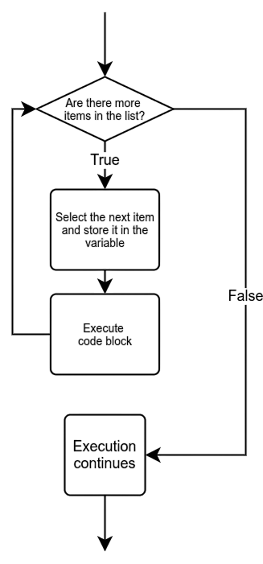

Iteracions Definides
Objectius d'aprenentatge
- Diferenciar la iteració definida de la iteració indefinida
- Comprendre el funcionament d'un bucle for en Python
- Utilitzar un bucle for per iterar a través de llistes i cadenes de text
El bucle for amb llistes
Pots utilitzar un bucle while per recórrer els elements d'una llista, igual que vam fer servir bucles while per recórrer cadenes de text. El següent programa imprimeix els elements de la llista, cadascun en una línia separada:
llista = [3, 2, 4, 5, 2]
index = 0
while index < len(llista):
print(llista[index])
index += 13 2 4 5 2
Això òbviament funciona, però és una manera bastant complicada de recórrer una llista, ja que has d'utilitzar una variable auxiliar index per recordar en quin element de la llista ets. Afortunadament, Python ofereix una manera més intuïtiva de recórrer llistes, cadenes i altres estructures similars.
El bucle for
Quan vols recórrer una col·lecció preparada d'elements, el bucle for de Python ho farà per tu. Per exemple, el bucle pot recórrer tots els elements d'una llista des del primer fins a l'últim.
Quan s'utilitza un bucle while, el programa no "sap" prèviament quantes iteracions farà el bucle. Es repetirà fins que la condició es faci falsa, o es surti del bucle d'alguna altra manera. És per això que es classifica com a iteració indefinida. Amb un bucle for, el nombre d'iteracions es determina quan es configura el bucle, i per tant es classifica com a iteració definida.
La idea és que el bucle for agafa els elements de la col·lecció un per un i realitza les mateixes accions sobre cadascun. El programador no ha de preocupar-se de quin element s'està processant en cada moment. La sintaxi del bucle for és la següent:
for <variable> in <col·lecció>:
<bloc>El bucle for agafa un element de la col·lecció, l'assigna a la variable, processa el bloc de codi i passa a l'element següent. Quan tots els elements de la col·lecció s'han processat, l'execució del programa continua des de la línia després del bucle.

Iterar a través d'una llista
El programa següent imprimeix tots els elements d'una llista utilitzant un bucle for:
llista = [3, 2, 4, 5, 2]
for element in llista:
print(element)3 2 4 5 2
En comparació amb l'exemple del principi d'aquesta secció, l'estructura és molt més fàcil d'entendre. Un bucle for fa que el recorregut a través d'una col·lecció d'elements sigui molt senzill.
El mateix principi s'aplica als caràcters d'una cadena:
nom = input("Si us plau, escriu el teu nom: ")
for caracter in nom:
print(caracter)Si us plau, escriu el teu nom: Anna A n n a
Exercici 1: Estelat
Escriu un programa que demani a l'usuari que introdueixi una cadena de text. El programa després imprimeix cada caràcter introduït en una línia separada. Després de cada caràcter hi ha d'haver un estel (*) imprès en la seva pròpia línia.
Així és com hauria de funcionar:
Si us plau, introdueix una cadena: Python P * y * t * h * o * n *
La funció range
Sovint saps quantes vegades vols repetir una determinada part del codi. Podries, per exemple, desitjar recórrer tots els nombres entre l'1 i el 100. La funció range connectada a un bucle for farà això per tu.
Hi ha algunes maneres diferents de cridar la funció range. La manera més senzilla és donar a la funció només un argument, que significa el punt final del rang. El punt final en si mateix està exclòs, igual que amb les retallades de cadenes. En altres paraules, la crida a la funció range(n) proporciona un bucle amb un rang de 0 a n-1:
for i in range(5):
print(i)0 1 2 3 4
Amb dos arguments, la funció retornarà un rang entre els dos nombres. La funció range(a,b) proporciona un rang que comença des d'a i acaba a b-1:
for i in range(3, 7):
print(i)3 4 5 6
Finalment, amb un tercer argument també pots especificar la mida del pas que fa el rang entre cada valor. La crida a la funció range(a, b, c) proporciona un rang que comença des d'a, acaba a b-1, i canvia per c amb cada pas:
for i in range(1, 9, 2):
print(i)1 3 5 7
Un pas també pot ser negatiu. Llavors el rang estarà en ordre invers. Fixa't que els dos primers arguments també estan intercanviats aquí:
for i in range(6, 2, -1):
print(i)6 5 4 3
Exercici 2: De negatiu a positiu
Escriu un programa que demani a l'usuari un enter positiu N. El programa després imprimeix tots els nombres entre -N i N inclosos, però omet el nombre 0. Cada nombre hauria d'estar imprès en una línia separada.
Un exemple de comportament esperat:
Si us plau, introdueix un enter positiu: 4 -4 -3 -2 -1 1 2 3 4
D'un rang a una llista
La funció range retorna un objecte de rang, que en molts aspectes es comporta com una llista, però en realitat no ho és. Si intentes imprimir el valor que retorna la funció, només veuràs una descripció d'un objecte de rang:
nombres = range(2, 7)
print(nombres)range(2, 7)
La funció list convertirà un rang en una llista. La llista contindrà tots els valors que estan en el rang. El curs avançat de programació, que segueix aquest, il·luminarà més aquest tema.
nombres = list(range(2, 7))
print(nombres)[2, 3, 4, 5, 6]
Exercici 3: Llista d'estels
Escriu una funció anomenada llista_estels, que pren una llista d'enters com a argument. La funció ha d'imprimir línies de caràcters d'estel. Els nombres a la llista especifiquen quants estels ha de contenir cada línia.
Per exemple, amb la crida a la funció llista_estels([3, 7, 1, 1, 2]) s'hauria d'imprimir:
*** ******* * * **
Exercici 4: Anagrama
Escriu una funció anomenada anagrama, que pren dues cadenes com a arguments. La funció retorna True si les cadenes són anagrames l'una de l'altra. Dues paraules són anagrames si contenen exactament els mateixos caràcters.
Alguns exemples de com hauria de funcionar la funció:
print(anagrama("tame", "meta")) # True
print(anagrama("tame", "mate")) # True
print(anagrama("tame", "team")) # True
print(anagrama("tabby", "batty")) # False
print(anagrama("python", "java")) # FalsePista: la funció sorted es pot utilitzar també en cadenes.
Exercici 5: Palíndroms
Escriu una funció anomenada palindroms, que pren un argument de cadena i retorna True si la cadena és un palíndrom. Els palíndroms són paraules que s'escriuen exactament igual cap endavant i cap enrere.
Escriu també un programa principal que demani a l'usuari que escrigui paraules fins que escriguin un palíndrom:
Si us plau, introdueix un palíndrom: python això no era un palíndrom Si us plau, introdueix un palíndrom: java això no era un palíndrom Si us plau, introdueix un palíndrom: oddoreven això no era un palíndrom Si us plau, introdueix un palíndrom: neveroddoreven neveroddoreven és un palíndrom!
Exercici 6: La suma dels nombres positius
Escriu una funció anomenada suma_positius, que pren una llista d'enters com a argument. La funció retorna la suma dels valors positius a la llista.
llista = [1, -2, 3, -4, 5]
resultat = suma_positius(llista)
print("El resultat és", resultat)El resultat és 9
Exercici 7: Nombres parells
Escriu una funció anomenada nombres_parells, que pren una llista d'enters com a argument. La funció retorna una nova llista que conté els nombres parells de la llista original.
llista = [1, 2, 3, 4, 5]
nova_llista = nombres_parells(llista)
print("original", llista)
print("nova", nova_llista)original [1, 2, 3, 4, 5] nova [2, 4]
Exercici 8: La suma de llistes
Escriu una funció anomenada suma_llistes que pren dues llistes d'enters com a arguments. La funció retorna una nova llista que conté les sumes dels elements en cada índex de les dues llistes originals. Pots assumir que ambdues llistes tenen el mateix nombre d'elements.
Un exemple de la funció en acció:
a = [1, 2, 3]
b = [7, 8, 9]
print(suma_llistes(a, b)) # [8, 10, 12]Exercici 9: Nombres diferents
Escriu una funció anomenada nombres_diferents, que pren una llista d'enters com a argument. La funció retorna una nova llista que conté els nombres de la llista original en ordre de magnitud, i de manera que cada nombre diferent està present només una vegada.
llista = [3, 2, 2, 1, 3, 3, 1]
print(nombres_diferents(llista)) # [1, 2, 3]Trobar el millor o el pitjor element en una llista
Una tasca de programació molt comuna és trobar el millor o el pitjor element en una llista, segons alguns criteris. Una solució simple és utilitzar una variable auxiliar per "recordar" quin dels elements processats fins ara era el més adequat. Aquesta elecció temporal millor es compara després amb cada element al seu torn, i al final de la iteració la variable conté el millor de tots.
Un esborrany aproximat que encara no compila del tot:
millor = valor_inicial # El valor inicial depèn de la situació
for element in llista:
if element > millor:
millor = element
# Ara tenim el millor descobrit!Els detalls del codi final del programa depenen del tipus dels elements a la llista, i també dels criteris per triar el millor (o pitjor) element. A vegades pots necessitar més d'una variable auxiliar.
Practiquem una mica aquest mètode.
Exercici 10: La longitud de la més llarga a la llista
Escriu una funció anomenada longitud_mes_llarga, que pren una llista de cadenes com a argument. La funció retorna la longitud de la cadena més llarga.
llista = ["first", "second", "fourth", "eleventh"]
resultat = longitud_mes_llarga(llista)
print(resultat)
llista = ["adele", "mark", "dorothy", "tim", "hedy", "richard"]
resultat = longitud_mes_llarga(llista)
print(resultat)8 7
Exercici 11: La més curta a la llista
Escriu una funció anomenada mes_curta, que pren una llista de cadenes com a argument. La funció retorna qualsevol de les cadenes que sigui la més curta. Si més d'una és igual de curta, la funció pot retornar qualsevol de les cadenes més curtes. Pots assumir que no hi haurà cadenes buides a la llista.
llista = ["first", "second", "fourth", "eleventh"]
resultat = mes_curta(llista)
print(resultat)
llista = ["adele", "mark", "dorothy", "tim", "hedy", "richard"]
resultat = mes_curta(llista)
print(resultat)first tim
Exercici 12: Totes les més llargues de la llista
Escriu una funció anomenada totes_les_llargues, que pren una llista de cadenes com a argument. La funció ha de retornar una nova llista que contingui la cadena més llarga de la llista original. Si més d'una és igual de llarga, la funció ha de retornar totes les cadenes més llargues.
L'ordre de les cadenes a la llista retornada ha de ser el mateix que a l'original.
llista = ["first", "second", "fourth", "eleventh"]
resultat = totes_les_llargues(llista)
print(resultat) # ['eleventh']
llista = ["adele", "mark", "dorothy", "tim", "hedy", "richard"]
resultat = totes_les_llargues(llista)
print(resultat) # ['dorothy', 'richard']Conceptes clau
-
Bucle
for: Estructura de control per iterar sobre elements d'una col·lecció (llistes, cadenes). És una iteració definida on el nombre d'iteracions es determina a l'inici. - Iteració sobre llistes: El bucle
for element in llista:permet recórrer tots els elements sense necessitat de variables auxiliars d'índex. - Iteració sobre cadenes: Els bucles
fortambé poden recórrer caràcters d'una cadena un per un. - Conversió range a llista: La funció
list()converteix un objecterangeen una llista amb tots els valors del rang. - Algorisme de cerca del millor/pitjor: Patró que utilitza una variable temporal per trobar l'element òptim en una llista comparant cada element iterativament.